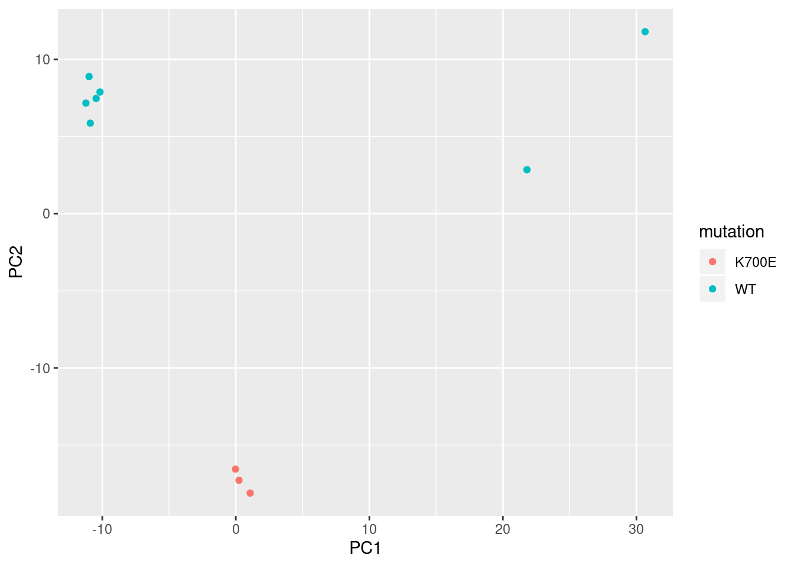

Last updated: 2020-07-23
Checks: 7 0
Knit directory: leafcutter_ds_pipeline/analysis/
This reproducible R Markdown analysis was created with workflowr (version 1.6.2). The Checks tab describes the reproducibility checks that were applied when the results were created. The Past versions tab lists the development history.
Great! Since the R Markdown file has been committed to the Git repository, you know the exact version of the code that produced these results.
Great job! The global environment was empty. Objects defined in the global environment can affect the analysis in your R Markdown file in unknown ways. For reproduciblity it’s best to always run the code in an empty environment.
The command set.seed(20191126) was run prior to running the code in the R Markdown file. Setting a seed ensures that any results that rely on randomness, e.g. subsampling or permutations, are reproducible.
Great job! Recording the operating system, R version, and package versions is critical for reproducibility.
Nice! There were no cached chunks for this analysis, so you can be confident that you successfully produced the results during this run.
Great job! Using relative paths to the files within your workflowr project makes it easier to run your code on other machines.
Great! You are using Git for version control. Tracking code development and connecting the code version to the results is critical for reproducibility.
The results in this page were generated with repository version a994d74. See the Past versions tab to see a history of the changes made to the R Markdown and HTML files.
Note that you need to be careful to ensure that all relevant files for the analysis have been committed to Git prior to generating the results (you can use wflow_publish or wflow_git_commit). workflowr only checks the R Markdown file, but you know if there are other scripts or data files that it depends on. Below is the status of the Git repository when the results were generated:
Ignored files:
Ignored: code/.snakemake/
Ignored: code/clustering/
Ignored: code/logs/
Untracked files:
Untracked: analysis/Darmanhg38.xls
Untracked: analysis/leafcutter_perind.counts.denoms
Untracked: analysis/leafcutter_perind.counts.numers
Untracked: output/DifferentialSplicing/
Unstaged changes:
Modified: code/Snakefile
Note that any generated files, e.g. HTML, png, CSS, etc., are not included in this status report because it is ok for generated content to have uncommitted changes.
These are the previous versions of the repository in which changes were made to the R Markdown (analysis/SF3B1_RMarkdown_initialcode.Rmd) and HTML (docs/SF3B1_RMarkdown_initialcode.html) files. If you’ve configured a remote Git repository (see ?wflow_git_remote), click on the hyperlinks in the table below to view the files as they were in that past version.
| File | Version | Author | Date | Message |
|---|---|---|---|---|
| Rmd | a994d74 | Shane Warland | 2020-07-23 | wflow_publish(“SF3B1_RMarkdown_initialcode.Rmd”) |
| Rmd | 1e80761 | Shane Warland | 2020-07-22 | This is now a more complete pipeline |
| Rmd | a9a1fa0 | Shane Warland | 2020-07-22 | Commiting these files |
#Access necessary packages
library(data.table)
library(readxl)
library(dplyr)
Attaching package: 'dplyr'The following objects are masked from 'package:data.table':
between, first, lastThe following objects are masked from 'package:stats':
filter, lagThe following objects are masked from 'package:base':
intersect, setdiff, setequal, unionlibrary(ggplot2)
library(reshape2)
Attaching package: 'reshape2'The following objects are masked from 'package:data.table':
dcast, meltlibrary(ggrepel)
library(tidyverse)── Attaching packages ───────────────────────────────────────────────────────────────────────────────────────────────────────── tidyverse 1.3.0 ──✔ tibble 2.1.3 ✔ purrr 0.3.4
✔ tidyr 1.1.0 ✔ stringr 1.4.0
✔ readr 1.3.1 ✔ forcats 0.4.0── Conflicts ──────────────────────────────────────────────────────────────────────────────────────────────────────────── tidyverse_conflicts() ──
✖ dplyr::between() masks data.table::between()
✖ dplyr::filter() masks stats::filter()
✖ dplyr::first() masks data.table::first()
✖ dplyr::lag() masks stats::lag()
✖ dplyr::last() masks data.table::last()
✖ purrr::transpose() masks data.table::transpose()library(gplots)
Attaching package: 'gplots'The following object is masked from 'package:stats':
lowesslibrary(knitr)
library("RColorBrewer")#comand for creating numerator and denominator files
#Specify the perind.counts.gz file from leafcutter clustering step
zcat /home/sfwarland/leafcutter_ds_pipeline/code/clustering/SF3B1K700E_v_WT/leafcutter_perind.counts.gz | perl -lne 'if ($.==1) {print} else {$_ =~ s/\d+\///g; print}' > leafcutter_perind.counts.numers
zcat /home/sfwarland/leafcutter_ds_pipeline/code/clustering/SF3B1K700E_v_WT/leafcutter_perind.counts.gz | perl -lne 'if ($.==1) {print} else {$_ =~ s/\/\d+//g; print}' > leafcutter_perind.counts.denomsgzip: /home/sfwarland/leafcutter_ds_pipeline/code/clustering/SF3B1K700E_v_WT/leafcutter_perind.counts.gz: No such file or directory
gzip: /home/sfwarland/leafcutter_ds_pipeline/code/clustering/SF3B1K700E_v_WT/leafcutter_perind.counts.gz: No such file or directory#Assigning Number and Denominator Count table
Denoms <- '../output/CountTables/SF3B1K700E_v_WT.numers.gz'
Numers <- '../output/CountTables/SF3B1K700E_v_WT.denoms.gz'
#create the count tables
#If .gz add "gunzip -c " to paste0 function
NumeratorCountTable <- fread(paste0(Numers), sep=" ", header=F, data.table=F)Registered S3 method overwritten by 'R.oo':
method from
throw.default R.methodsS3DenominatorCountTable <- fread(paste0(Denoms), sep=" ", header=F, data.table=F)
head(NumeratorCountTable) V1 V2 V3 V4 V5 V6 V7 V8 V9 V10 V11
1 chr2:219002:219747:clu_1_NA 10 0 0 3 7 7 0 2 0 0
2 chr2:219002:221464:clu_1_NA 0 0 0 1 1 3 0 0 0 0
3 chr2:219002:224864:clu_1_NA 56 0 0 19 39 22 0 9 0 7
4 chr2:219002:229966:clu_1_NA 82 0 0 65 29 66 3 45 8 0
5 chr2:224921:229966:clu_1_NA 71 0 0 19 47 34 0 13 0 8
6 chr2:230045:230547:clu_2_NA 2 0 0 3 4 7 1 11 0 0#Create PSI_table and clean up
PSI_Table <- NumeratorCountTable[-1]/DenominatorCountTable[-1]
head(PSI_Table) V2 V3 V4 V5 V6 V7 V8 V9 V10 V11
1 1 NaN NaN 1 1 1 NaN 1 NaN NaN
2 NaN NaN NaN 1 1 1 NaN NaN NaN NaN
3 1 NaN NaN 1 1 1 NaN 1 NaN 1
4 1 NaN NaN 1 1 1 1 1 1 NaN
5 1 NaN NaN 1 1 1 NaN 1 NaN 1
6 1 NaN NaN 1 1 1 1 1 NaN NaNcolnames(NumeratorCountTable)[1] <- "chrom"
#gsub(":clu_.+", "", NumeratorCountTable$chrom) %>% head()
row.names(PSI_Table) <- gsub(":clu_.+", "", NumeratorCountTable$chrom)
PSI_Table[is.na(PSI_Table)] <- 0
#Have to add column names for propper sorting later
col_names<-fread(Numers, sep="", quote=F)[1,] %>% colnames()
colnamessplit<- unlist(str_split(col_names," "))
data.table(colnamessplit) colnamessplit
1: 9543
2: 27168
3: 14580
4: 45109
5: 30092
6: 48124
7: 32641
8: 30090
9: 36181
10: 28684head(colnamessplit)[1] "9543" "27168" "14580" "45109" "30092" "48124"colnames(PSI_Table)<-colnamessplit
head(PSI_Table) 9543 27168 14580 45109 30092 48124 32641 30090 36181
chr2:219002:219747 1 0 0 1 1 1 0 1 0
chr2:219002:221464 0 0 0 1 1 1 0 0 0
chr2:219002:224864 1 0 0 1 1 1 0 1 0
chr2:219002:229966 1 0 0 1 1 1 1 1 1
chr2:224921:229966 1 0 0 1 1 1 0 1 0
chr2:230045:230547 1 0 0 1 1 1 1 1 0
28684
chr2:219002:219747 0
chr2:219002:221464 0
chr2:219002:224864 1
chr2:219002:229966 0
chr2:224921:229966 1
chr2:230045:230547 0Now lets filter the data based on significant introns identified in Darman et al.
#Lets try filtering it by significant introns from Darman
Darman <- read_excel("Darmanhg38.xls", col_names=T)
#used mutate to add 1 to both start and stop columns in Darman in order to clean up mapping
Darman1 <- Darman %>% mutate(Start=Start+1,End=End+1)
Darman1 %>% head()# A tibble: 6 x 25
Chromosome Start End Strand `Gene Symbols` `FDR q-value`
<chr> <dbl> <dbl> <chr> <chr> <dbl>
1 chr17 7.56e7 7.56e7 + MYO15B 0.0222
2 chrX 1.54e8 1.54e8 - MECP2 0.000253
3 chr12 1.16e8 1.16e8 - MED13L 0.000000277
4 chr4 2.07e7 2.07e7 + PACRGL 0.000357
5 chr10 5.46e6 5.46e6 + NET1 0.000136
6 chr7 1.02e8 1.02e8 + ORAI2,PRKRIP1… 0.00000000801
# … with 19 more variables: `Alternative 3' splice site` <chr>,
# `Alternative 5' splice site` <chr>, `Exon inclusion` <chr>, `Exon
# skipping` <chr>, `Intron retention` <chr>, `Junction novelty` <chr>,
# `NMD prediction` <chr>, `Significant in BRCA` <chr>, `Significant in
# CLL` <chr>, `Significant in UVM` <chr>, `Significant in SKCM` <chr>,
# `Average mutant PSI` <dbl>, `Average WT PSI` <dbl>, `PSI Log2 fold
# change` <dbl>, `Ave mutant junction count` <dbl>, `Ave WT junction
# count` <dbl>, `Canonical junction` <chr>, `Aberrant junction
# sequence` <chr>, `Canonical junction sequence` <chr>#combine Darman first 3 columns so it matches
Darman.df <- unite(Darman1, Chrom, c("Chromosome","Start"), sep = ":", remove = TRUE, na.rm = FALSE)
head(Darman.df)# A tibble: 6 x 24
Chrom End Strand `Gene Symbols` `FDR q-value` `Alternative 3'…
<chr> <dbl> <chr> <chr> <dbl> <chr>
1 chr1… 7.56e7 + MYO15B 0.0222 True
2 chrX… 1.54e8 - MECP2 0.000253 False
3 chr1… 1.16e8 - MED13L 0.000000277 True
4 chr4… 2.07e7 + PACRGL 0.000357 False
5 chr1… 5.46e6 + NET1 0.000136 True
6 chr7… 1.02e8 + ORAI2,PRKRIP1… 0.00000000801 True
# … with 18 more variables: `Alternative 5' splice site` <chr>, `Exon
# inclusion` <chr>, `Exon skipping` <chr>, `Intron retention` <chr>,
# `Junction novelty` <chr>, `NMD prediction` <chr>, `Significant in
# BRCA` <chr>, `Significant in CLL` <chr>, `Significant in UVM` <chr>,
# `Significant in SKCM` <chr>, `Average mutant PSI` <dbl>, `Average WT
# PSI` <dbl>, `PSI Log2 fold change` <dbl>, `Ave mutant junction
# count` <dbl>, `Ave WT junction count` <dbl>, `Canonical
# junction` <chr>, `Aberrant junction sequence` <chr>, `Canonical
# junction sequence` <chr>Darmansorted.df <- unite(Darman.df, Chrom, c("Chrom","End"), sep = ":", remove = TRUE, na.rm = FALSE)
#paste(Darman$Chromosome, ":", Darman$Start, ":", Darman$End)
head(Darmansorted.df)# A tibble: 6 x 23
Chrom Strand `Gene Symbols` `FDR q-value` `Alternative 3'…
<chr> <chr> <chr> <dbl> <chr>
1 chr1… + MYO15B 0.0222 True
2 chrX… - MECP2 0.000253 False
3 chr1… - MED13L 0.000000277 True
4 chr4… + PACRGL 0.000357 False
5 chr1… + NET1 0.000136 True
6 chr7… + ORAI2,PRKRIP1… 0.00000000801 True
# … with 18 more variables: `Alternative 5' splice site` <chr>, `Exon
# inclusion` <chr>, `Exon skipping` <chr>, `Intron retention` <chr>,
# `Junction novelty` <chr>, `NMD prediction` <chr>, `Significant in
# BRCA` <chr>, `Significant in CLL` <chr>, `Significant in UVM` <chr>,
# `Significant in SKCM` <chr>, `Average mutant PSI` <dbl>, `Average WT
# PSI` <dbl>, `PSI Log2 fold change` <dbl>, `Ave mutant junction
# count` <dbl>, `Ave WT junction count` <dbl>, `Canonical
# junction` <chr>, `Aberrant junction sequence` <chr>, `Canonical
# junction sequence` <chr>#Make rowname actual column so I can filter it
PSI_TableRowNamed <- cbind(Chrom = rownames(PSI_Table), PSI_Table)
#PSI_TableRowNamed <- PSI_TableRowNamed[,-1]
head(PSI_TableRowNamed) Chrom 9543 27168 14580 45109 30092 48124
chr2:219002:219747 chr2:219002:219747 1 0 0 1 1 1
chr2:219002:221464 chr2:219002:221464 0 0 0 1 1 1
chr2:219002:224864 chr2:219002:224864 1 0 0 1 1 1
chr2:219002:229966 chr2:219002:229966 1 0 0 1 1 1
chr2:224921:229966 chr2:224921:229966 1 0 0 1 1 1
chr2:230045:230547 chr2:230045:230547 1 0 0 1 1 1
32641 30090 36181 28684
chr2:219002:219747 0 1 0 0
chr2:219002:221464 0 0 0 0
chr2:219002:224864 0 1 0 1
chr2:219002:229966 1 1 1 0
chr2:224921:229966 0 1 0 1
chr2:230045:230547 1 1 0 0#dat2 <- data_qual[data_qual$ID %in% dat$ID, ]
DarmanFiltered.df <- PSI_TableRowNamed[PSI_TableRowNamed$Chrom %in% Darmansorted.df$Chrom,]
dim(DarmanFiltered.df)[1] 692 11head(DarmanFiltered.df) Chrom 9543 27168 14580 45109 30092
chr2:24315246:24328052 chr2:24315246:24328052 0 1 0 1 0
chr2:26214577:26215053 chr2:26214577:26215053 1 1 0 1 1
chr2:27037703:27037815 chr2:27037703:27037815 1 1 0 1 1
chr2:27037893:27038146 chr2:27037893:27038146 1 1 0 1 1
chr2:27381722:27382126 chr2:27381722:27382126 1 1 0 1 1
chr2:46543189:46543754 chr2:46543189:46543754 1 1 1 1 1
48124 32641 30090 36181 28684
chr2:24315246:24328052 0 1 0 1 0
chr2:26214577:26215053 0 1 0 1 0
chr2:27037703:27037815 1 1 1 1 0
chr2:27037893:27038146 1 1 1 1 0
chr2:27381722:27382126 1 1 1 1 0
chr2:46543189:46543754 1 1 1 1 1DarmanFinished <- (DarmanFiltered.df %>%data.matrix() %>% as.data.frame() %>% select(-Chrom)%>% as.matrix())
head(DarmanFinished) 9543 27168 14580 45109 30092 48124 32641 30090
chr2:24315246:24328052 0 1 0 1 0 0 1 0
chr2:26214577:26215053 1 1 0 1 1 0 1 0
chr2:27037703:27037815 1 1 0 1 1 1 1 1
chr2:27037893:27038146 1 1 0 1 1 1 1 1
chr2:27381722:27382126 1 1 0 1 1 1 1 1
chr2:46543189:46543754 1 1 1 1 1 1 1 1
36181 28684
chr2:24315246:24328052 1 0
chr2:26214577:26215053 1 0
chr2:27037703:27037815 1 0
chr2:27037893:27038146 1 0
chr2:27381722:27382126 1 0
chr2:46543189:46543754 1 1Run the PCA
#Running PC analysis
library(tidyverse)
DarmanFinished = scale(DarmanFinished)
PCResults <- (DarmanFinished) %>%
#head(100) %>%
t() %>%
prcomp(center=T, scale=T)
PCResults.df <- as.data.frame(PCResults$x[,1:10]) %>% rownames_to_column()
head(PCResults.df) rowname PC1 PC2 PC3 PC4 PC5
1 9543 -11.22568230 7.172131 -0.3968210 1.3921127 -0.5910683
2 27168 -0.02328187 -16.559457 -2.6660208 10.4858965 13.3559310
3 14580 30.64887497 11.800004 -17.0067299 0.1090665 -0.2137821
4 45109 -10.99079606 8.892463 0.2454178 1.0902339 -1.0231421
5 30092 -10.89631869 5.869837 -1.1482396 3.1755749 -3.3484961
6 48124 -10.16982643 7.891338 0.6027077 -3.0404127 3.9033717
PC6 PC7 PC8 PC9 PC10
1 6.02000622 -7.0525179 5.08762550 -10.15755404 2.203099e-14
2 -0.05489443 -0.9144861 -0.54614203 0.91073190 1.174061e-14
3 -0.24362182 -0.1919491 0.08085549 0.03517435 1.765255e-14
4 0.87804289 1.3062776 -14.16656423 -1.78497788 1.624048e-14
5 10.92229172 5.6669894 3.95399441 7.95066222 1.081080e-14
6 -9.56932464 10.1401504 4.50780142 -3.45750517 1.676437e-14I have the PCR results but I want to add data from the group file in order to be able to cluster my PC plot by group This code processes it and adds it
#getting rid of ID from group file
groupfile <- "../data/groupfiles/sf3b1_k700e_wt.groups.tsv"
groupfiletable <- read.delim(groupfile, header = F, sep = "\t")
head(groupfiletable) V1 V2
1 id27168 K700E
2 id32641 K700E
3 id36181 K700E
4 id28684 WT
5 id14580 WT
6 id30090 WTgroupNoID <- data.frame(lapply(groupfiletable, function(x) {gsub("id", "", x)}))
colnames(groupNoID) <- c("rowname", "mutation")
head(groupNoID,20) rowname mutation
1 27168 K700E
2 32641 K700E
3 36181 K700E
4 28684 WT
5 14580 WT
6 30090 WT
7 30092 WT
8 9543 WT
9 45109 WT
10 48124 WT#merging group file
#Using new PCResults
combined.data <- merge(x = PCResults.df, y = groupNoID, by = c("rowname"), all = TRUE)
head(combined.data) rowname PC1 PC2 PC3 PC4 PC5
1 14580 30.64887497 11.800004 -17.006730 0.1090665 -0.21378207
2 27168 -0.02328187 -16.559457 -2.666021 10.4858965 13.35593100
3 28684 21.80393877 2.852849 24.132634 0.2851606 0.05691744
4 30090 -10.46152440 7.472415 0.930207 -3.6107418 0.69629270
5 30092 -10.89631869 5.869837 -1.148240 3.1755749 -3.34849607
6 32641 0.23805147 -17.279302 -1.947562 6.1474118 -14.37692431
PC6 PC7 PC8 PC9 PC10 mutation
1 -0.24362182 -0.1919491 0.08085549 0.035174349 1.765255e-14 WT
2 -0.05489443 -0.9144861 -0.54614203 0.910731904 1.174061e-14 K700E
3 1.01120054 0.1080250 0.16949782 0.009478321 -3.341771e-14 WT
4 -7.75225821 -9.8473433 1.41884014 7.914073597 3.053113e-15 WT
5 10.92229172 5.6669894 3.95399441 7.950662217 1.081080e-14 WT
6 -5.41974579 0.3532528 0.54966461 -1.056023519 -1.068590e-14 K700ENow visualize the PCA
#PCA graph
PCResultsNoS2.df <- PCResults.df[-c(5,6,11,12),]
ggplot(combined.data) +
geom_point(aes(x=PC1, y=PC2, color= mutation))
#This was simply used to create bed files to trouble shoot
Darman %>% select("Chromosome","Start","End") %>%
write.table("/project2/yangili1/shanewarland/SF3B1_project/DarmanBed.bed",col.names =F, sep = "\t", row.names=F, quote=F)
PSI_Table %>% rownames_to_column() %>% select(rowname) %>%
separate(rowname, c("Chromosome","Start","End"), sep=":")%>% write.table("/project2/yangili1/shanewarland/SF3B1_project/PSI_BED.bed",col.names =F, sep = "\t", row.names=F, quote=F)
"chr6:10723241:10724556" %in% PSI_TableRowNamed$Chrom[1] FALSEarrange(Darmansorted.df, `FDR q-value`) %>% head()# A tibble: 6 x 23
Chrom Strand `Gene Symbols` `FDR q-value` `Alternative 3'…
<chr> <chr> <chr> <dbl> <chr>
1 chr6… + SYCP2L,TMEM14… 2.09e-31 True
2 chr1… + DYNLL1 7.02e-29 True
3 chr1… + ZDHHC16 5.93e-23 True
4 chr2… + TCEA2 7.31e-23 True
5 chr1… - SERBP1 3.64e-22 True
6 chr1… + ZNF771 2.05e-21 True
# … with 18 more variables: `Alternative 5' splice site` <chr>, `Exon
# inclusion` <chr>, `Exon skipping` <chr>, `Intron retention` <chr>,
# `Junction novelty` <chr>, `NMD prediction` <chr>, `Significant in
# BRCA` <chr>, `Significant in CLL` <chr>, `Significant in UVM` <chr>,
# `Significant in SKCM` <chr>, `Average mutant PSI` <dbl>, `Average WT
# PSI` <dbl>, `PSI Log2 fold change` <dbl>, `Ave mutant junction
# count` <dbl>, `Ave WT junction count` <dbl>, `Canonical
# junction` <chr>, `Aberrant junction sequence` <chr>, `Canonical
# junction sequence` <chr>
sessionInfo()R version 3.6.1 (2019-07-05)
Platform: x86_64-pc-linux-gnu (64-bit)
Running under: Scientific Linux 7.4 (Nitrogen)
Matrix products: default
BLAS/LAPACK: /software/openblas-0.2.19-el7-x86_64/lib/libopenblas_haswellp-r0.2.19.so
locale:
[1] LC_CTYPE=en_US.UTF-8 LC_NUMERIC=C
[3] LC_TIME=en_US.UTF-8 LC_COLLATE=en_US.UTF-8
[5] LC_MONETARY=en_US.UTF-8 LC_MESSAGES=en_US.UTF-8
[7] LC_PAPER=en_US.UTF-8 LC_NAME=C
[9] LC_ADDRESS=C LC_TELEPHONE=C
[11] LC_MEASUREMENT=en_US.UTF-8 LC_IDENTIFICATION=C
attached base packages:
[1] stats graphics grDevices utils datasets methods base
other attached packages:
[1] RColorBrewer_1.1-2 knitr_1.23 gplots_3.0.1.1
[4] forcats_0.4.0 stringr_1.4.0 purrr_0.3.4
[7] readr_1.3.1 tidyr_1.1.0 tibble_2.1.3
[10] tidyverse_1.3.0 ggrepel_0.8.1 reshape2_1.4.3
[13] ggplot2_3.2.1 dplyr_1.0.0 readxl_1.3.1
[16] data.table_1.12.8
loaded via a namespace (and not attached):
[1] httr_1.4.1 jsonlite_1.6 R.utils_2.9.0
[4] modelr_0.1.8 gtools_3.8.1 assertthat_0.2.1
[7] cellranger_1.1.0 yaml_2.2.0 pillar_1.4.2
[10] backports_1.1.4 lattice_0.20-38 glue_1.4.1
[13] digest_0.6.20 promises_1.0.1 rvest_0.3.5
[16] colorspace_1.4-1 htmltools_0.3.6 httpuv_1.5.1
[19] R.oo_1.22.0 plyr_1.8.4 pkgconfig_2.0.2
[22] broom_0.5.2 haven_2.3.1 scales_1.1.0
[25] gdata_2.18.0 whisker_0.3-2 later_0.8.0
[28] git2r_0.26.1 generics_0.0.2 farver_2.0.1
[31] ellipsis_0.2.0.1 withr_2.1.2 lazyeval_0.2.2
[34] cli_1.1.0 magrittr_1.5 crayon_1.3.4
[37] evaluate_0.14 R.methodsS3_1.7.1 fs_1.3.1
[40] fansi_0.4.0 nlme_3.1-140 xml2_1.3.2
[43] tools_3.6.1 hms_0.5.3 lifecycle_0.2.0
[46] munsell_0.5.0 reprex_0.3.0 compiler_3.6.1
[49] caTools_1.17.1.2 rlang_0.4.6 grid_3.6.1
[52] rstudioapi_0.10 bitops_1.0-6 labeling_0.3
[55] rmarkdown_1.13 gtable_0.3.0 DBI_1.1.0
[58] R6_2.4.0 lubridate_1.7.4 utf8_1.1.4
[61] workflowr_1.6.2 rprojroot_1.3-2 KernSmooth_2.23-15
[64] stringi_1.4.3 Rcpp_1.0.3 vctrs_0.3.1
[67] dbplyr_1.4.2 tidyselect_1.1.0 xfun_0.8